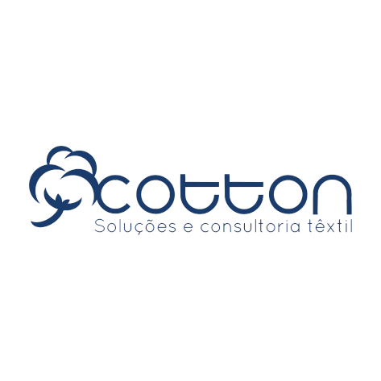
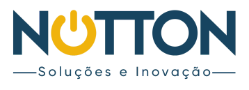
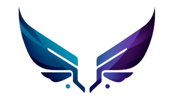
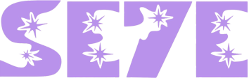
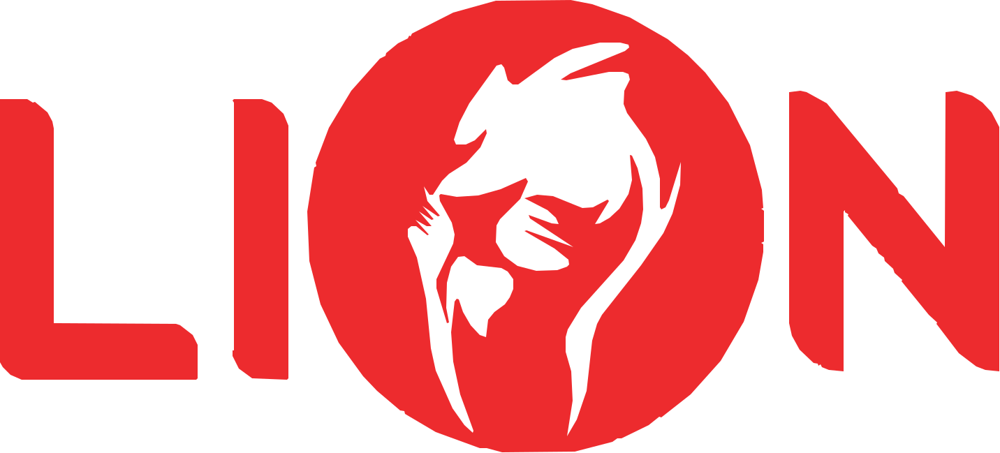
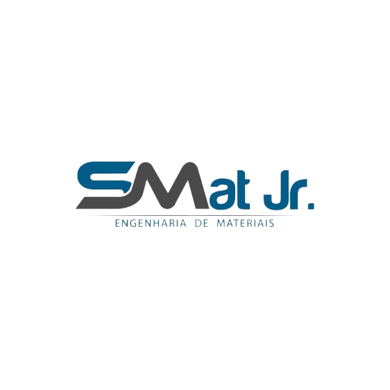
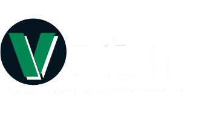

CONSELHO · INSTITUCIONAL
CONSELHO · INSTITUCIONALConheça o NEJ Londrina
História, identidade, princípios e a Rede Pé Vermelho. Conteúdo de referência do Conselho 2026.
NOSSA ORIGEM
“Temos muito respeito por tudo que foi construído antes de nós, nós somos fruto da história e do legado de quem veio antes.”
2013
Surge o NEJ UEL
Empresas juniores da UEL formam o terceiro núcleo do Paraná.
2014
1º Londrina Júnior
Surge o LDJR, importante ponto de contato regional.
2017
NEJ Londrina
Com a expansão para UTFPR Londrina e Cornélio Procópio, o núcleo assume a denominação NEJ Londrina.
2018
Núcleo Referência do Paraná
Primeira conquista da maior premiação paranaense.
2019
Três cidades
Expansão da rede para Apucarana.
2020
Núcleo Conectado e Constelação
O núcleo volta a ocupar posição de destaque no Paraná.
2021
Alto Impacto e Referência
Conquista dos dois reconhecimentos.
2023
Bi Alto Impacto
Celebração do protagonismo da Rede Pé Vermelho.
2025
Núcleo Protagonista
Ampliação para Bandeirantes com a federação da Fertfield (UENP).
2026
O ano da excelência
Direção e ambição apresentadas no material institucional de 2026.
MISSÃO E VALORES
Potencializar a união da Rede Pé Vermelho, ser referência e alcançar o Núcleo Excelência.
Pé Vermelho
Orgulho das raízes culturais do Norte Paranaense e pertencimento à Rede.
União
Superar obstáculos, celebrar vitórias e apoiar uns aos outros.
Serelepes por resultado
Lutar pelos resultados de modo saudável e com constância.
Compromisso com nossa história
Respeitar conquistas anteriores e construir sobre esse legado.
REGRAS NÃO NEGOCIÁVEIS
Nosso forte é a união
Temos muita história e respeitamos nosso legado
Somos Pé Vermelho
Metas são um conjunto de histórias a serem contadas
Nosso primeiro compromisso é com o desenvolvimento
Juntos fazemos acontecer
Estamos em constante evolução
Trabalhamos e performamos por um Núcleo de Excelência
Lideramos pelo exemplo
ORGANOGRAMA 2026
Estrutura apresentada no material institucional de 2026. Sujeita a atualização para a gestão 2027.
CONSELHO DELIBERATIVO1 representante por EJ
↓PRESIDÊNCIA DO CONSELHO
↓DIRETORIA EXECUTIVAPresidência ExecutivaOperaçõesDesenvolvimento EstratégicoFormação EmpreendedoraExpansão da Rede
NOSSA REDE PÉ VERMELHO
29 EJs associadas no documento de referência de 2026. Os anos e instituições foram transcritos desse material e não representam confirmação cadastral de 2027.
APUCARANA 7 EJs




BANDEIRANTES 1 EJs
CORNÉLIO PROCÓPIO 3 EJs
LONDRINA 18 EJs



